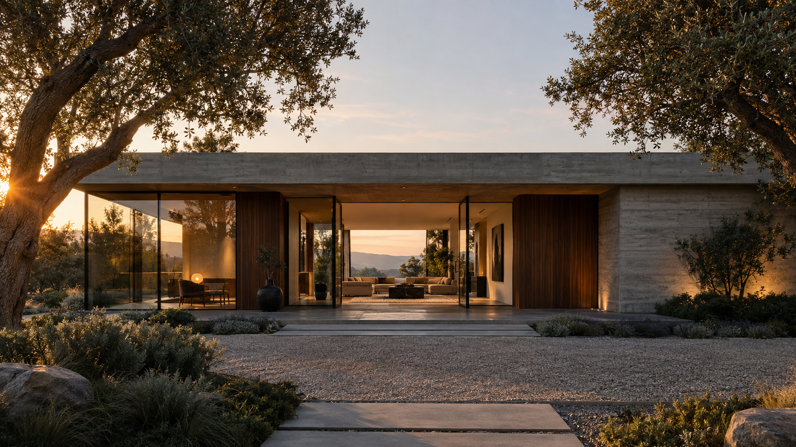

01 / RESIDENCIAS
Patio
El lujo de vivir más cerca.
Del verde. De la luz. De vos.

ARQUITECTURA QUE SE HABITA
Un lugar para volver a lo esencial.
LA MIRADA UMBRA
Creemos en la arquitectura que deja entrar la luz, respeta su entorno y hace espacio para lo que importa. Diseñamos lugares donde la vida encuentra su propio ritmo.
LUGARES CON IDENTIDAD
COLECCIÓN 01 — 03Tres maneras de habitar.
Una misma mirada.
El lujo de vivir más cerca.
Del verde. De la luz. De vos.
NUESTRO PUNTO DE PARTIDA
Cada proyecto comienza escuchando el lugar. Su paisaje, su luz y sus posibilidades.
Materiales honestos y espacios flexibles que acompañan la vida de todos los días.
Arquitectura pensada para seguir siendo relevante con el paso del tiempo.
TODO EMPIEZA CON UNA CONVERSACIÓN